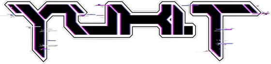

Psytrance · Night Full On / Twilight / Full On
Label DJ · Patronus Records (CH)
MoDem Festival 2025
THE HIVE · Croatia · Live DJ set · 1:59:16
A continuous journey through Night Full On and Twilight, shaped by energy, tension and the dancefloor.
SoundCloud loads only when you choose to listen.